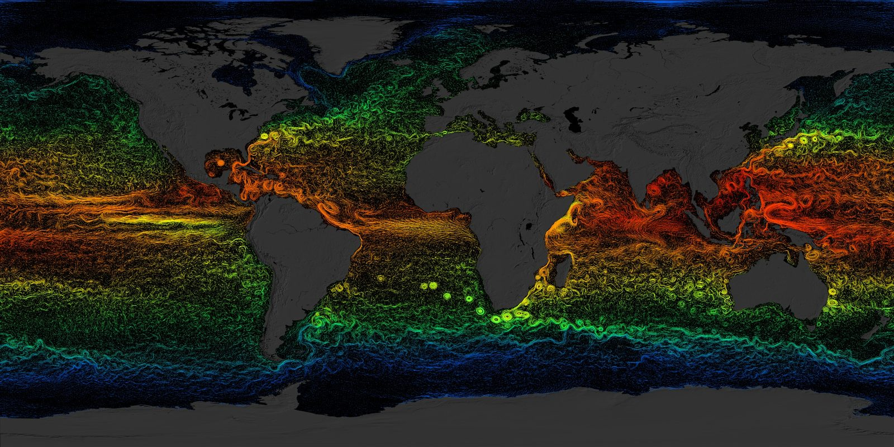
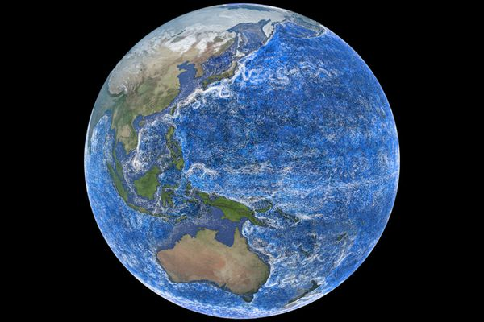
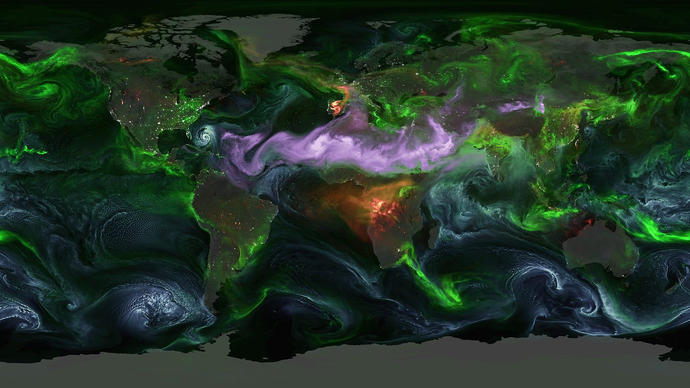

Ten NASA Earth visualisations, in sound
Every image has
a voice. Listen to
the planet change.
NASA's Earth Information Center shows us the planet as pictures: sea temperature, aerosols, forest height, city lights. 3Sama turns each frame into a place you can move through by ear — no screen required, no prior training needed.

The collection
Each track is a still frame from the official challenge resource list, analysed into brightness, hue and edge maps, then played back live as you explore.
 01
01Night Lights, 2012 → 2023
 02
02Sea Currents & Temperature
 03
03GEOS Aerosols
 04
04GEDI Forest Height
 05
05DYAMOND Carbon Dioxide
 06
06Lightning from the ISS

07Perpetual Ocean 2
 08
08Atmospheric River, 3D
 09
09Air Quality Model
 10
10Caldwell 73 — reference
Three rules, and why
Everything else is built on top of these. They follow cross-modal correspondences that hold across cultures and are cited on the Method page.
Up is high
Latitude becomes pitch on a log scale from 200 to 1600 Hz — equal musical steps, so the top of the map is never shrill.
Left is left
Longitude becomes stereo position, pan = 2x − 1. With headphones the map sits in front of you, Lisbon to Tokyo.
Bright is loud
Luminance becomes gain through a limiter fixed at −12 dB. A city at night can be loud without ever being painful.
“The picture is already an encoding. We are only reading it out loud.”
Design principle
Designed to be used with the screen off.
The canvas is never the only way in. Every scene also exposes an object list — each entry plays its own sound and reads its own description — and every spoken line appears in a live region, so a screen reader and the sonification never talk over each other.
Blindfold mode blanks the screen entirely, so a sighted visitor can try the same path a blind listener takes. Then “Reveal” shows the image and what you drew.
